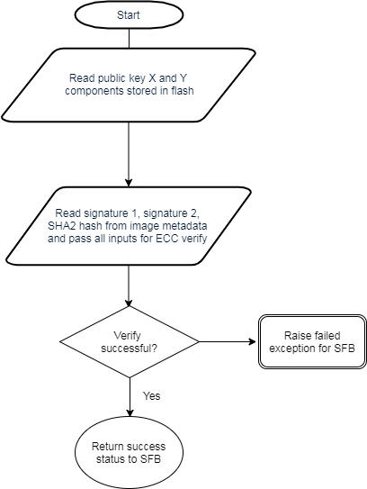
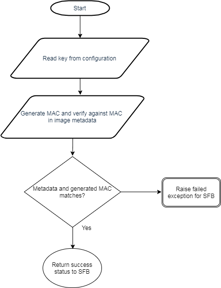

Secure Firmware (SFW)¶
This section serves as a guide to the Texas Instruments Secure Firmware (SFW) ecosystem including the custom authentication procedure, application architecture, and drivers. SFW describes the process by which a developer can enable an application to successfully verify the image on a CC2640R2F device for improved integrity and security of the image.
The guide will cover the principles of the SFW process, the out of the box examples included in the SimpleLink CC2640R2 SDK, and the process for adding SFW to an existing project.
This SFW guide will cover:
The readme for the secure_fw project (/examples/rtos/CC2640R2_LAUNCHXL/blestack/secure_fw) will cover:
- How to run the SFW examples included in the SimpleLink CC2640R2 SDK
The supported development kit for SFW is the CC2640R2 Launchpad. To follow the procedures listed in this guide, one CC2640R2 Launchpad development kit is required.
Constraints¶
The following are the limitations of this secure firmware implementation:
- We do not have a reliable method of marking an image as verified, hence this module needs to be run at each power-up.
- This module is compatible to run on CC2640R2 and future platforms.
- IAR or CCS can be used to build the project.
Functional Overview¶
The SFB does the following operations:
- Verify self integrity (this feature is not supported currently)
- Verify image
- Handle the exception for image verification failure
System Architecture¶
SFB resides in the last page of flash (Page 31). SFB uses the metadata from the image header (starting at Flash Page 0) along with the parameters available in SFB configuration to verify the secure image before executing it. If the image verification fails and SECURE_FW_ERASE_FLASH is set to true, the existing image is erased, the error code is written at flash page 1 and the bootloader enters standby mode.
Functional Description¶
The flash layout for a secure firmware project is shown below. The main difference is that the image metadata is stored in flash page 0 and the Secure Firmware Bootloader (SFB) is stored at the beginning of flash page 31.
Image Metadata¶
Each “secure image” has an image header/metadata consisting of the following:
- 64-bit Magic word
- 64-bit space for version, length, etc.
- start and stop of firmware; program entry address
- possible TLV ‘s include: signElement, certElement
Image metadata includes version number, size, etc. The image is signed with root private key or a signer private key. In latter case, signer cert is part of the image metadata.
| Field name | Number of bytes | Description |
|---|---|---|
| Magic word | 8 | Unique identifier to indicate start of secure firmware image |
| Properties | 8 | This field contains the following fields: 4 bytes - firmware version 4 bytes - length of image |
| Start address | 4 | Application startup entry address |
| End address | 4 | End address of current image |
| TLV | x | Sign element(s) as described in Table 2 below |
The signElement TLV contains the signature value.
| Field name | No of bytes | Description |
|---|---|---|
| Type | 1 | The following signatures are supported: 1: ECDSA P-256 signature 2: AES-128-CBC signature 3+: reserved |
| Timestamp/ counter | 4 | Reserved for future use |
| Sign payload | x | Type 1: signPayload = {8-byte signerInfo (SHA2 hash digest), 64-byte signature} Type 2: signPayload = {16-byte AES-CBC-MAC value} |
Secure Firmware Configuration¶
The following table lists the configuration changes can be modified in the secure_fw project in secure_fw_config.h file:
| Configuration parameter | Default value | Description |
|---|---|---|
| SECURE_FW_SELF_CHECK | False | The status of this flag determines if self integrity check needs to be performed on SFB (This feature is not supported currently) |
| SECURE_FW_VERIFY_ALWAYS | 1 | This value is used to determine whether SFB needs to run at every power reset, value one indicates SFB to be run at every power reset (This feature is not supported currently) |
| SECURE_FW_FW_ROLLBACK | 0 | Value of 0 indicates no rollback to previous firmware, value of 1 allows rollback to previous FW versions (This feature is not supported currently). |
| SECURE_FW_SFW_MAGIC_WORD | 57:46:53 20:4C:42 53:0A | Magic word for start of secure firmware image (ASCII for “SBL SFW” in little-endian format) |
| SECURE_FW_SIGN_TYPE | 1 | Type of sign element: 0x01: ECC 0x02: AES (AES is not supported currently) |
| SECURE_FW_LOCK | True | Locks page 31 if set to true |
| SECURE_FW_ERASE_FLASH | False | Erases flash on failure if set to true, does not erase when set to false |
| Field name | Num of bytes | Description |
|---|---|---|
| Type | 1 | Type 1: ECC P-256 raw public key Type 2: Symmetric AES-128 key Type 3: ECC P-256 self-signed public (not supported currently) |
| Length | 1 | Length of this structure |
| Options | 2 | Reserved for future use |
| Cert Payload | x | Type 1: certPayload = {8-byte signer info, 64-byte public key} Type 2: certPayload = {16-byte AES key} Type 3: certPayload = {8-byte signer info, 64-byte public key, x-byte signElement} (not supported currently) |
Secure Firmware control flow¶
Control to SFB is passed on considering the use case where the ROM bootloader is used with SFB for authentication. The ROM bootloader is used for programming the device. There are no checks prior to programming the device since the ROM bootloader cannot be modified. At every device reset, the SFB executes first and verifies the firmware signature.
Figure 100. Secure Firmware sequence
The SFB works as follows:
Verify self integrity if required by configuration (this feature is not supported currently).
If the firmware version is greater than current one, it is considered valid, else an exception is raised (Firmware rollback feature is not supported currently).
Verify image
Read image header
- Verify magic word
- Read version and check compatibility
- Read start and end address fields and sanity check address fields
- Parse for sign element. Find first sign element with type matching one of the supported sign.
Check for supported cert element stored in flash.
- If none found, then raise exception
Verify image
Sign type is ECC:
Do ECC verify (ROM code) over the image using included signature and SHA2 hash (library).
Figure 101. ECC Verify
Sign type is AES:
Compute aes_cbc_mac over image : Generate CBC MAC and authenticate generated MAC with included MAC (driverlib code).
Figure 102. AES CBC verification
If verification is successful, then execute new image.
When an exception is raised due to verification failure, the default action would be erase image and enter low power mode. The action in case of exception can be modified by the user to an action of their choice. The reason for failure is logged on flash page 1 as described in Viewing failure error codes.
Building a secure firmware application¶
Adding to application project¶
The linker file used is cc26xx_app_secure_fw.icf or cc26xx_app_secure_fw.cmd depending on platform. The field indicating start of flash in the linker file needs to move from 0x0000 to 0x0070 (size of header).
The position of reset vectors needs to be specified in the configuro tool arguments, currently we use the flag SECURE_FW_IMG as an argument to the configuro tool to point to the new location of reset vectors according to the platform used.
The location of reset vectors can be configured in /source/ti/blestack/common/cc26xx/kernel/cc2640/cc2640_r2_csdk.cfg for CC2640R2 platform.
Integrating Secure Firmware functionality¶
To add the security verification capability, the ECC ROM symbols needs to imported. An example of this is shown in secure_fw_verifyImage_ecc() in secure_fw.c.
The header file “SHA2CC26XX.h” needs to be added to the project and reference to SHA2CC26XX.a library should be added to the linker settings.
For a new private key, .pem file should be created and its path should be provided in the argument for secure_fw_tool.py. Also the public keys need to be updated in the location where they are stored (in this implementation they are stored in flash in reverse byte order, reference by the local variable in secure_fw.c)
Miscellaneous¶
Keys¶
“private.pem” is the name of the default private key file used by secure_fw_tool.py. While generating a new key pair, the content of this file must be replaced.
To change public keys, build secure_fw project with SECURE_FW_LOCK set to false. The 64 byte public key pair is stored from address 0x0001FF4C to 0x0001FF8C in flash for IAR, and it is stored in address 0x0001FF59 to 0x0001FFA5 for CCS secure_fw image. The values can be edited using SmartRF Flash Programmer 2 or they can be changed in the local variables section of secure_fw.c. Note that the keys are stored in reverse byte order (little-endian).
Magic word¶
The magic word is configurable by updating the SECURE_FW_SFW_MAGIC_WORD field in secure_fw_config.h file.
Parameters in secure_fw_tool.py script¶
A python script is provided to create a secure image from a nonsecured image.
Use the “python secure_fw_tool.py -h” command for the correct usage of this script. See the readme for the secure firmware example project for more details: /examples/rtos/CC2640R2_LAUNCHXL/blestack/simple_peripheral_secure_fw/README.html
Viewing failure error codes¶
If SECURE_FW_ERASE_FLASH is set to TRUE in secure_fw project, upon failure to verify secure header, the entire image firmware is erased and the error is written to the beginning of page 1 at address 0x00001000.
The description of the error codes is listed below:
| Code | Error reason |
|---|---|
| 0x01 | Invalid magic word |
| 0x02 | Invalid firmware version |
| 0x03 | Invalid start/end address |
| 0x04 | Invalid length |
| 0x05 | Cert element not found |
| 0x06 | Verification failed |
| 0x07 | Self-verification failed (This feature is not supported currently) |